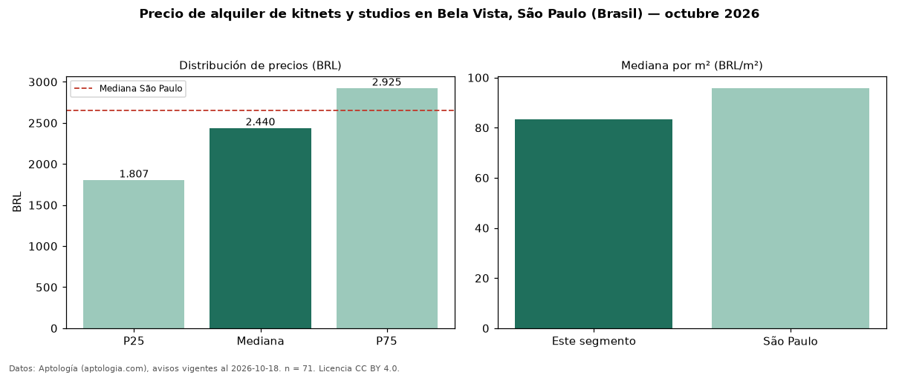

Precio de alquiler de kitnets y studios en Bela Vista, São Paulo (Brasil) — octubre 2026
Con 71 avisos vigentes, el canon mediano de kitnets y studios en alquiler en Bela Vista, São Paulo (Brasil) es BRL 2.440 al mes. Frente a la mediana de São Paulo para kitnets y studios (BRL 2.650), queda 8 % por debajo. Por metro cuadrado, la mediana es BRL 83,38/m² al mes (n = 69 avisos con área), 13 % por debajo de São Paulo (BRL 95,83/m²). El área mediana anunciada es 29 m². La cuota de mantenimiento o condominio mediana declarada es BRL 551 al mes (n = 71), aparte del canon. Por precio mediano es el puesto 15 de 21 bairros de São Paulo con al menos 30 avisos de kitnets y studios en alquiler (BRL): en la franja media. La mitad central de los avisos va de BRL 1.807 a BRL 2.925 (razón 1,6), una dispersión moderada. 33 % de los avisos con el dato declara parqueadero o cochera. Datos: Aptología (aptologia.com), CC BY 4.0 — https://www.aptologia.com/br/aluguel/sao-paulo/bela-vista. Archivos: PDF, CSV con las cifras y gráfica PNG.

| Avisos únicos | 71 |
|---|---|
| Percentil 25 | COP 1.807 |
| Mediana | COP 2.440 |
| Percentil 75 | COP 2.925 |
| Mediana por m² | COP 83 |
Fuente: avisos vigentes de portales inmobiliarios recopilados por Aptología, deduplicados (mínimo 30 avisos únicos por celda). Precios pedidos, no cerrados. Fecha: 2026-10-18.